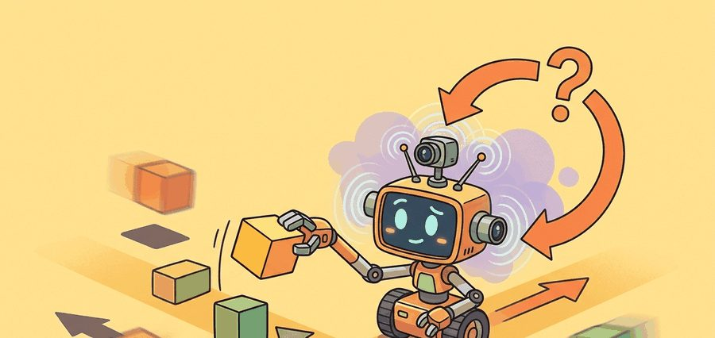

"A robot dataset is not a pile of videos. It is a memory of what the body was allowed to try."
A Data-Hungry Manipulator

This section assumes familiarity with supervised imitation objectives introduced in section 21.2. The coverage and split concepts developed here are extended in section 23.6 (dataset formatting with LeRobot) and section 24.1 (scaling laws across large multi-embodiment collections). Distribution shift, which is the central failure mode when coverage is insufficient, is analyzed formally in section 25.2.
A language model trained overnight on a trillion tokens takes seconds to produce its next version. A robot manipulation policy trained on the same wall-clock budget may gain only a few hundred new demonstrations: every extra trajectory requires a human operator, a physical reset, a working arm, and time. That gap is why data, not compute, is the binding constraint in embodied AI right now. Here you will see exactly where the bottleneck lives, why naive trajectory counts hide the real problem, and how to measure coverage so that the data you collect actually prepares the robot for the conditions it will face.
Concretely, this section delivers on that promise in three steps: first it shows why physical resets make robot data collection fundamentally slower than text collection, then it introduces the factor-grid coverage metric that exposes the gap naive episode counts hide, and finally it turns that metric into a concrete collection protocol and algorithm you can run on a real dataset.
A common assumption is that collecting more robot demonstrations works the same way as gathering more text for a language model: double the episodes and you roughly double the policy's competence. This is wrong in embodied AI because the binding constraint is not total sample count but coverage of the physical factor space. One thousand demonstrations recorded in a single lab under fixed lighting and one operator can leave the policy completely blind to a new camera angle or a second room, while fifty carefully chosen episodes spanning those conditions may generalize reliably. The correct mental model is that each new demonstration is useful only if it adds a combination of deployment factors not already represented, and the combinatorial product space grows far faster than any practical episode budget can match by sheer volume alone.
Somewhere right now a graduate student is resetting a coffee mug onto a table for the four-hundredth time so an arm can attempt the same grasp again, and as Figure 23.1A makes concrete, every reset they skip, every camera angle they never set up, and every slip they forget to label becomes a permanent blind spot in the learned policy: the data bottleneck in embodied AI is ultimately a physical one. A demonstration trajectory is a time-indexed sequence $\tau = (o_0, a_0, r_0, o_1, a_1, \ldots, o_T)$. For imitation learning, the central supervised object is usually $(o_t, a_t)$, but the engineering object is larger: camera frames, robot state, commanded action, executed action, timestamps, calibration, operator identity, task description, reset condition, and outcome. Each episode is not just a file; it is a physical experiment that cost a human reset, and that cost is why robot datasets grow orders of magnitude slower than text corpora.
A dataset that costs nothing to copy is cheap in every sense that matters; a dataset built from physical trials is expensive in the one sense that cannot be automated: someone had to be there, reset the scene, and do it again.
The sequential structure of $\tau$ is not a bookkeeping choice; it is a physical necessity. A robot's action at time $t$ depends on the history of contact, velocity, and sensor noise that preceded it. A bag of unordered $(o_t, a_t)$ pairs loses that causal chain, so a policy trained on shuffled pairs cannot recover from a mid-grasp slip because it never sees what the operator did after the slip. Keeping the time index intact preserves the corrective transitions that make demonstrations more than a set of target poses.
A hardware clock shared across all recording streams gives the time index its physical meaning. A camera frame, a joint encoder reading, and a force-torque sample taken at the same nominal instant each carry a timestamp from that shared reference. During playback or training, the index aligns these heterogeneous streams. The policy then sees a consistent snapshot of robot state rather than a mix of readings from slightly different moments.
So why does adding more episodes fail to close the gap? Useful coverage grows in a product space. Suppose a task varies over objects $O$, poses $P$, backgrounds $B$, robot states $S$, and operators $H$. The coverage target is not $|O| + |P| + |B| + |S| + |H|$. The naive grid is closer to $|O||P||B||S||H|$, and the real world adds correlations and long-tail cases. Five objects, three poses, two backgrounds, two robot states, and two operators already require 120 cells. Adding a fourth pose triples the grid while adding only one item to a list.
So far: synchronized timestamps give a trajectory its physical meaning, and coverage of the deployment factor space (not raw episode count) is the real target because that space grows combinatorially rather than additively.
To see the scale of this gap concretely: a kitchen manipulation policy trained on 50,000 episodes collected under one lighting condition and one camera position can still fail on the first new kitchen, while 300 carefully chosen episodes spanning three lighting conditions and two camera positions may generalize reliably, because the second dataset covers the deployment-critical dimensions of variation and the first does not. This is why a thousand beautiful clips from one kitchen may still fail in a second kitchen. The diagram above contrasts these two regimes directly: a tall episode-count bar can still leave most cells of the deployment factor grid empty, which is the gap that sheer volume cannot close.
Think of a recipe that varies by protein (chicken, beef, tofu), cooking method (grill, bake, stir-fry), sauce (three options), and side dish (four options). A cook who has only tried chicken grilled with one sauce and one side has tasted four combinations, but the full menu has 3 x 3 x 3 x 4 = 108 distinct dishes. Add a fifth protein and the menu does not grow by one dish; it grows by 36 new dishes all at once. Physical factor spaces work the same way: each new variable multiplies the grid rather than extending it, so a dataset that looks large by episode count can still cover a tiny fraction of the conditions the robot will actually face.
The useful unit of robot data is not a trajectory count by itself. The useful unit is coverage of the variables that change the action a competent policy should choose.
For a dataset $D$, write each episode as $e_i = (x_i, u_i, y_i)$, where $x_i$ is the episode context, $u_i$ is the time-series trajectory, and $y_i$ is the outcome and labels. A split is valid only if the held-out set changes at least one context variable that deployment will actually change.
Use LeRobotDataset or RLDS-style episode containers (RLDS, Reinforcement Learning Datasets, is a TensorFlow-based format for storing episodic robot trajectories with synchronized observation and action streams) after the coverage variables are named. The library handles video indexing, frame access, and metadata storage, but it cannot decide which deployment variables your validation split should hold out.
The following fragment computes a small coverage table from episode metadata. It is deliberately small: before building a foundation model, the team should be able to explain which objects, rooms, operators, and failure modes the data actually covers.
# Estimate metadata coverage for a small robot demonstration table.
# The point is to count deployment-relevant factors before model training.
episodes = [
{"object": "mug", "room": "lab", "operator": "a", "result": "success"},
{"object": "mug", "room": "kitchen", "operator": "b", "result": "slip"},
{"object": "bowl", "room": "lab", "operator": "a", "result": "success"},
]
fields = ["object", "room", "operator", "result"]
coverage = {field: len({episode[field] for episode in episodes}) for field in fields}
grid_upper_bound = 1
for value in coverage.values():
grid_upper_bound *= value
print(coverage)
print("observed episodes:", len(episodes))
print("factor-grid upper bound:", grid_upper_bound)Trace the coverage computation with a tiny dataset of five episodes, each tagged with two factors: lighting in {day, night} and grip in {top, side}.
Episodes: e1=(day, top), e2=(day, top), e3=(day, side), e4=(day, top), e5=(night, top).
Step 1, count distinct levels per factor: lighting touches {day, night}, so 2 levels; grip touches {top, side}, so 2 levels. The coverage dictionary is {lighting: 2, grip: 2}.
Step 2, factor-grid upper bound: multiply the level counts: 2 x 2 = 4 possible cells.
Step 3, which cells are actually filled? The distinct (lighting, grip) pairs in the log are (day, top), (day, side), (night, top). That is 3 of the 4 cells. The cell (night, side) never appears.
Step 4, read the gap: 5 episodes, but only 3 of 4 cells covered, and 3 of those 5 episodes are duplicates of the single (day, top) cell. The raw count of 5 hides that a quarter of the grid (night-time side grasps) is a blind spot, and that 60% of collection effort piled into one cell. This is the count-versus-coverage gap in miniature.
When auditing an existing dataset with LeRobot, run lerobot.check_dataset with the --episodes flag before any training step: it reports missing camera streams, timestamp gaps larger than one frame period, and episodes where the recorded action length does not match the observation length. Catching a 50 ms timestamp drift at this stage costs seconds; catching it after a week of training costs you the whole run. If your recording stack does not emit hardware-synchronized timestamps, add a software sync-pulse column to every episode at collection time and validate that column first.
The expected output should make the reader slightly suspicious: three episodes touch four distinct metadata fields, yet the simple factor grid already contains 16 possible combinations. The correct response is not to collect every grid cell blindly. It is to decide which factors are deployment-critical, then design train, validation, and stress splits that test those factors deliberately. The same logic governs distribution shift problems that arise when a policy trained offline is evaluated in new conditions.
Three demonstrations covering a 16-cell grid is like tasting three squares of a 4x4 chocolate bar and declaring you understand the whole bar. You do understand the bar, just not any of the squares you have not tried yet, which is precisely the part the robot will encounter on Tuesday.
Input: Task description $\mathcal{T}$, deployment factor set $\mathcal{F} = \{f_1, f_2, \ldots, f_k\}$, episode budget $N$, operator pool $H$, desired split fractions $(\alpha_\text{train}, \alpha_\text{val}, \alpha_\text{stress})$
Output: Annotated dataset $D = \{e_i\}_{i=1}^{N}$ with coverage table $C$, valid train/val/stress splits, and policy checkpoint $\pi_\theta$
lerobot.check_dataset: confirm no missing camera streams, no timestamp gaps $\Delta\tau > T_\text{frame}$, and no action-length mismatches before training.Coverage, not count, is the quantity to optimize. The protocol below turns that principle into a recording session a team can run today: an ordered checklist that runs from writing the task contract to freezing the splits.
| Bottleneck | Why It Hurts Learning | Mitigation |
|---|---|---|
| Reset cost | Rare failures are under-sampled because each reset consumes human time. | Scripted resets, fixture design, and explicit stress episodes. |
| Operator bias | The policy learns one person's preferred path rather than the task manifold. | Multiple operators, instruction randomization, and operator metadata. |
| Timing drift | Observation and action streams no longer describe the same instant. | Hardware timestamps, sync pulses, and dropped-frame labels. |
| Missing negatives | The learner sees successes but not the boundary of unsafe or ineffective behavior. | Intervention labels, failed attempts, and recovery demonstrations. |
If the dataset contains only smooth expert rollouts, the policy may never learn recovery. For contact-rich tasks, near-misses, slips, aborts, and human interventions are not embarrassing leftovers; they are supervision for the boundary of competence.
Consider a specific case: a manipulation policy trained on 200 cup-grasping demonstrations, all collected in one lab with two operators and a fixed overhead light. At deployment in a cafeteria with a side-mounted camera and a third operator, the policy fails on 60% of grasps despite 100% training accuracy. The cause is not the model size or the algorithm; it is that lighting angle and camera position were held constant in every training episode, so the policy learned a representation tied to those conditions. Ablation studies on multi-environment robot datasets (as of 2024) typically show that adding even a small number of episodes with varied lighting can substantially reduce out-of-distribution failure rates, though the exact magnitude depends on the task and the sensor setup. The episode count did not change; the coverage did.
A team collecting dishwasher-loading demonstrations should not ask only how many episodes they have. They should ask how many rack layouts, plate sizes, lighting states, gripper approaches, human operators, and recovery cases appear in each split.
The Open X-Embodiment effort pooled over one million robot trajectories from 22 distinct robot embodiments across 34 labs precisely because no single lab could cover the deployment factor space alone. Training the RT-X policies on this aggregated, coverage-diverse corpus reportedly produced positive transfer that boosted success rates over single-dataset baselines on the tasks evaluated, suggesting that coverage across robots, scenes, and tasks beats raw episode count from any one source, at least for the embodiments and tasks tested.
Active Research Directions (2024-2026):
1. Active data collection and coverage-driven acquisition. Rather than collecting episodes uniformly, recent work trains an acquisition policy that identifies which factor combinations are under-represented and steers the operator toward them. The RoboAgent line and follow-on work from CMU (2024) formalize this as an information-gain objective over the deployment factor space, turning the coverage table in this section into an online scheduler.
2. Synthetic-to-real data augmentation at scale. Rendering engines and diffusion-based domain randomization now generate plausible background, lighting, and object-texture variants without additional physical episodes. Google DeepMind's RT-2 and subsequent work (2024-2025) demonstrate that augmenting a fixed set of real demonstrations with rendered variants can close a substantial fraction of the lighting and camera-angle coverage gap identified above.
3. Internet-scale video pretraining as a coverage proxy. Several 2024-2025 systems (including work from Physical Intelligence and Stanford's HumanPlus line) pretrain visual representations on large human-activity video corpora to give the policy prior knowledge of object appearance and hand-object interaction across diverse environments, then fine-tune on a small targeted demonstration set. The coverage gap does not disappear, but the amount of real robot data required to cross it shrinks substantially.
Open problem: None of the above approaches provides a principled stopping criterion: when is the dataset "covered enough" for a target deployment distribution that is only partially specified at collection time? A rigorous framework connecting coverage certificates, held-out evaluation risk, and episode budgets under real-world logistics constraints (fixed operator hours, hardware wear) remains an open research question with direct practical impact.
For one robot task you care about, list five deployment variables and mark which ones your current dataset actually covers. If the validation split does not change any of them, it is probably a comfort split rather than a generalization test.
Robot data is bottlenecked by physical coverage, not by storage. A strong collection plan names the deployment factors before it celebrates the episode count.
Design a metadata sheet for 50 demonstrations of a contact-rich task. Include at least four context variables, two failure labels, and one held-out split rule.
Goal: See empirically that episode count and useful coverage are different quantities by auditing a public robot dataset and watching out-of-distribution accuracy track coverage rather than raw count.
Tools needed: Python, the lerobot package (pip install lerobot), pandas, and matplotlib. Pull any small LeRobot-format dataset from the Hugging Face Hub (for example a pusht or aloha sample dataset) via LeRobotDataset("lerobot/...").
What to do: Extract per-episode metadata (or synthesize factor tags such as starting object pose bucket and trajectory length bucket if the dataset lacks rich labels). Compute the coverage dictionary and the factor-grid upper bound exactly as in Code Fragment 1, then build a 2D coverage heatmap over two chosen factors.
What to vary: Train a tiny behavior-cloning policy (behavior cloning is supervised learning of a policy directly from recorded observation-action pairs, with no reward signal or trial-and-error exploration) (an MLP over flattened observations is enough) on subsets that hold a given factor level out of training, then increase the number of held-out levels present in the training subset.
What to observe: Validation accuracy on the held-out factor level should climb as that level enters training, even when total training-episode count is held fixed by subsampling. The plot of accuracy versus covered-cells (not versus episode count) is the core takeaway of this section made visible. Budget 15 to 30 minutes.
Coverage auditor for an existing dataset (beginner, one weekend): Write a Python script that loads a LeRobot dataset, extracts episode metadata fields (object, lighting, operator, room), computes the factor-grid upper bound, and prints a coverage heatmap using Matplotlib. The key challenge is deciding which metadata fields count as deployment-critical versus incidental, because that choice determines whether the heatmap reveals a real gap or a cosmetic one.
Scripted-reset teleoperation loop in MuJoCo (intermediate, one to two weeks): Build a keyboard or SpaceMouse teleoperation interface in MuJoCo that automatically resets a table-top pick-and-place scene after each episode, logs synchronized observations and actions as a LeRobot-compatible dataset, and flags episodes where the gripper never made contact. The key challenge is keeping the hardware clock aligned across camera frames and joint-state readings so the recorded trajectories are usable for imitation learning without post-hoc interpolation.
Coverage-driven collection scheduler (intermediate, one to two weeks): Using Gymnasium or PyBullet as a simulation back-end, implement the Coverage-First algorithm from this section: after every fifth episode, recompute the coverage table and return the next under-represented factor combination to the operator as a collection prompt. The key challenge is representing the combinatorial factor space efficiently enough that the scheduler stays responsive as the episode count grows past a few hundred.
Section 23.2 studies leader-follower systems such as ALOHA and GELLO, which reduce the cost of collecting precise, repeatable, high-quality demonstrations.
Defines the handheld gripper approach, latency matching, and relative-trajectory action interface used in portable demonstration collection.
Cheng, X. et al. (2024). Open-TeleVision: Teleoperation with Immersive Active Visual Feedback.
A current reference for immersive visual feedback, active perception, and VR-style operator embodiment in data collection.
Zhao, T. Z. et al. (2023). Learning Fine-Grained Bimanual Manipulation with Low-Cost Hardware.
Introduces ALOHA and ACT, making the connection between low-cost bimanual teleoperation, action chunking, and real-world manipulation data explicit.
A kinematically matched leader device study that directly compares teleoperation ergonomics and reliability against other low-cost interfaces.
Hugging Face LeRobot Documentation.
Documents dataset conversion, policy training, and robot-control utilities that turn teleoperation logs into reusable learning artifacts.